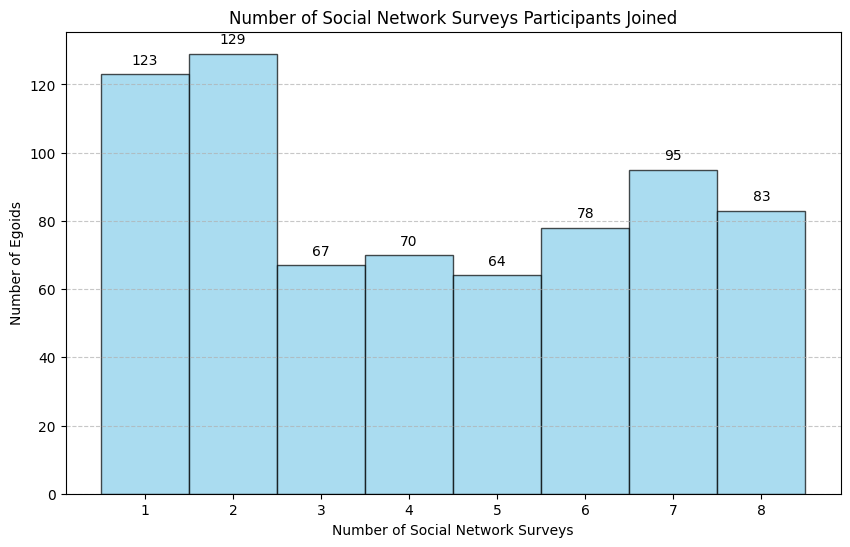

egoid wave surveys contacts total_contacts participation_rate contact_ids overlap_contacts overlap
10237 1 7 10 43 0.232558 {715237, 710213, 944646, 201164, 970860, 606285, 794543, 555957, 791455, 395167} set() 0.000000
10237 2 7 6 43 0.139535 {927336, 760234, 549070, 519415, 791455, 395167} {395167, 791455} 0.333333
10237 3 7 13 43 0.302326 {390853, 189158, 982757, 349320, 899046, 760234, 609614, 857038, 525361, 230359, 789561, 427966, 193183} {760234} 0.076923
10237 4 7 10 43 0.232558 {390853, 982757, 899046, 349320, 760234, 857038, 609614, 824506, 802525, 277215} {982757, 390853, 899046, 349320, 760234, 857038, 609614} 0.700000
10237 5 7 16 43 0.372093 {524225, 669474, 993411, 390853, 899046, 881384, 195368, 760234, 438507, 431884, 549070, 193183, 277215, 791455, 869629, 395167} {760234, 390853, 899046, 277215} 0.250000
10237 6 7 15 43 0.348837 {669474, 390853, 486534, 293830, 530826, 760234, 438507, 880589, 549070, 193183, 277215, 466934, 791455, 904250, 395167} {669474, 390853, 760234, 438507, 549070, 277215, 791455, 395167, 193183} 0.600000
10237 7 7 6 43 0.139535 {982757, 486534, 760234, 609614, 824506, 193183} {760234, 486534, 193183} 0.500000Since participants report their network contacts over social network survey, some contacts may be repteatedly reprted in multiple surveys. To understand whether students’ social network survey are cumulative or aggregated over time, in this blog, we exmaine the overlapping rate of reported contacts.
The following figure shows how many waves of surveys participants have ever joined.

For example, 78 participants completed 6 surveys.
The following table shows the social network summary of participant “10237”.
egoid: individual identifier;
wave: survey identifier;
surveys: the number of surveys the participant completed;
contacts: the number of contacts reported in the current survey;
total contacts: the number of contacts reported in total survey;
participation_rate: contacts/total contacts;
contact_ids: the identifiers of contacts reported in the current survey;
overlap: the overlapping rate of contacts of previous and current survey, which is calculated as: the number of contacts reported both by the previous and current surveys / the number of contacts in the current survey.
In the survey of wave 2, contacts “395167(Sibling), 791455(Sibling)” has been reported in the survey of wave 1, the overlap rate is 2/6=0.33.
In the survey of wave 3, contacts “760234”(Romantic Partner) has been reported in the survey of wave 2, the overlap rate is 1/13=0.076.
In the survey of wave 4, contacts “982757(Sibling), 390853(Friend), 899046(Stepsibling/Friend), 349320(Friend), 760234(Romantic Partner), 857038(Romantic Partner/OtherFamily), 609614(Parent)” has been reported in the survey of wave 3, the overlap rate is 7/10=0.70.
In the survey of wave 5, contacts ” 760234(Romantic Partner), 390853(Friend), 899046(Stepsibling/Friend),, 277215(Friend)” has been reported in the survey of wave 4, the overlap rate is 4/16=0.25.
In the survey of wave 6, contacts ” 669474(Friend), 390853(Friend), 760234(Romantic Partner), 438507(Friend), 549070(Parent), 277215(Friend), 791455(Sibling), 395167(Sibling), 193183(Friend)” has been reported in the survey of wave 5, the overlap rate is 9/15=0.60.
In the survey of wave 7, contacts ” 760234(Romantic Partner), 486534(Friend), 193183(Friend)” has been reported in the survey of wave 6, the overlap rate is 3/6=0.50.
The following table shows the descriptive summary for all participants (Person \(⨯\) Wave of Survey)
| egoid | vertex1 | wave | surveys | contacts | total_contacts | participation_rate | overlap | |
|---|---|---|---|---|---|---|---|---|
| count | 2979.000000 | 2979.000000 | 2979.000000 | 2979.000000 | 2979.000000 | 2979.000000 | 2979.000000 | 2979.000000 |
| mean | 54811.522323 | 114008.924136 | 3.785834 | 5.618328 | 12.047667 | 34.428332 | 0.391431 | 0.395416 |
| std | 26008.010124 | 183801.840091 | 2.163821 | 2.116411 | 6.120111 | 16.537434 | 0.213036 | 0.344069 |
| min | 10115.000000 | 10115.000000 | 1.000000 | 1.000000 | 1.000000 | 1.000000 | 0.022222 | 0.000000 |
| 25% | 31439.000000 | 34203.000000 | 2.000000 | 4.000000 | 7.000000 | 22.000000 | 0.250000 | 0.000000 |
| 50% | 53518.000000 | 60396.000000 | 3.000000 | 6.000000 | 11.000000 | 32.000000 | 0.344828 | 0.411765 |
| 75% | 77621.500000 | 88185.000000 | 5.000000 | 7.000000 | 17.000000 | 44.000000 | 0.483871 | 0.692308 |
| max | 99978.000000 | 998789.000000 | 8.000000 | 8.000000 | 25.000000 | 83.000000 | 1.000000 | 1.000000 |